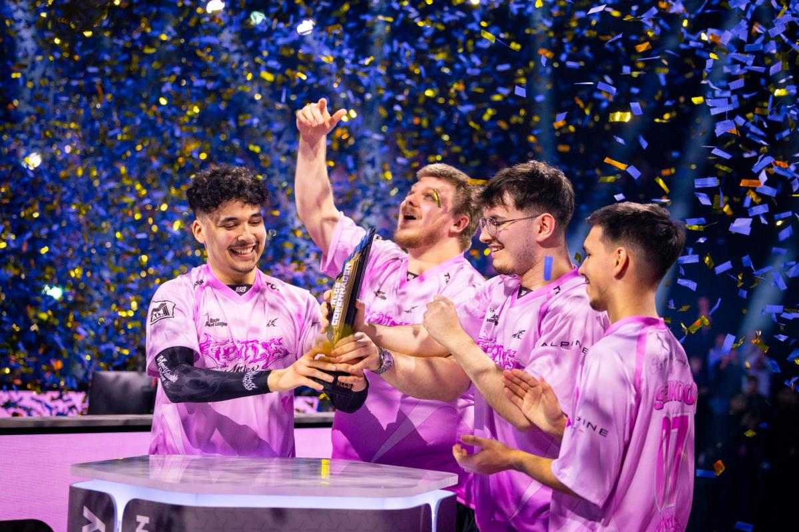
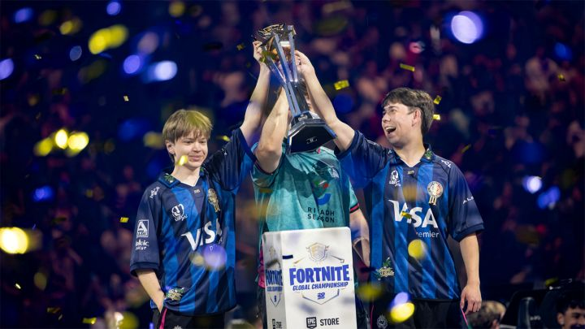
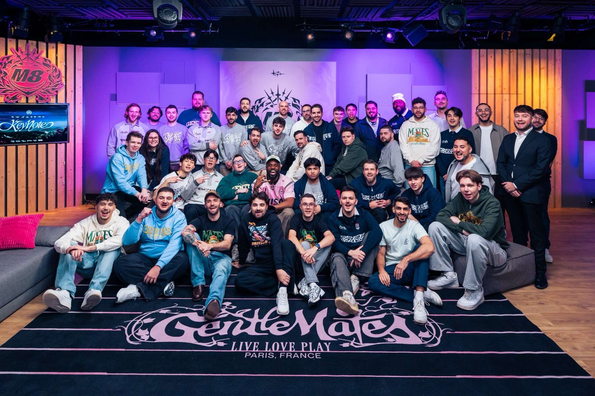

Bientôt 3 ans que Gentle Mates est rentré sur la scène esportive, d'abord sur Valorant avec le fameux roster SBG, double champion de France et victorieux du tournoi Ascension les amenant dans la plus haute ligue sur Valorant.
Bientôt 3 ans que Gentle Mates est rentré sur la scène esportive, d'abord sur Valorant avec le fameux roster SBG, double champion de France et victorieux du tournoi Ascension les amenant dans la plus haute ligue sur Valorant.Un autre roster est rapidement annoncé, sur le jeu Fortnite, concentré en premier lieu sur la France, Gentle Mates recrute les deux espoirs Snayzy et Podasai qui les amèneront à la coupe du monde dès leur première année.
L'équipe se développe dans un même temps sur TFT, avec deux très bons joueurs français, Enzo et Lescoco.
2023 est une année plus que réussis pour Gentle Mates qui atteint ses espoirs les plus fous et les vont même jusqu'à les dépasser.
 L'annonce des nouveaux jeux pour 2024 est ambitieuse, une arrivée forte sur trois nouveaux jeux, doublant le nombre de rosters.
Tout d'abord sur Rocket League, une franche réussite dès le premier tournoi international malgrès une suite de saison plus compliqué.
Mais aussi sur LoL, le jeu Esport par excellence. Un premier split bien rattrapé qui amène l'équipe à la troisième place française et lui permet de participer aux EMEA masters, le plus grand tournoi des ligues mineures. On évitera le sujet du deuxième split qui pourrait raviver certains traumatismes chez les fans.
L'équipe recrute aussi Marinelord, le monstre des RTS qui évolue sans compétition sur son jeu, AOE 4, en remportant majors et worlds.
Sur Valorant, l'organisation prend la décision de laisser leurs chances aux joueurs qui se sont qualifiés pour les VCT. Le roster reste donc inchangé pour le début d'année, mais Kadavra viendra renforcer l'équipe à partir de la mid-season. Malheureusement, ça ne suffira pas et M8 n'atteindra pas les play offs.
Du côté de Fortnite, l'année n'est pas facile non plus, le duo Snayzy-Podasai bat de l'aile, ce qui amène au recrutement de Vanyak pour nous envoyer aux worlds. Mais malheureusement, Vanyak étant ukrainien, il n'obtient pas le Visa nécessaire pour rentrer aux Etats-Unis et ne peut pas se rendre à la coupe du monde. C'est un coup dur pour M8 qui pensait marquer un grand coup aux Etats Unis en enchaînant les worlds Fortnite et Rocket League.
En conclusion, l'année 2024 n'est pas la réussite espérée, le développement surement trop rapide de l'organisation, ne permet pas d'assurer de bons résultats, un problème à régler en 2025.

2025 est plein de promesses pour Gentle Mates, la structure arrive sur COD, le jeu de cœur de Gotaga et Brawks. Une annonce qui plaît à tous les fans COD français.
Mais clairement, les attentes sont trop hautes, une saison catastrophique en call of duty league avec 5 matchs gagné pour 27 perdus. De nombreux changements au cours de l'année, un total de neufs joueurs passés par la structure en sachant qu'une équipe est composé de 4 joueurs.
Combinés avec une saison Valorant pour le moins décevante, à nouveau pas de playoffs, un split 2 sans aucune victoire et surtout l'élimination de la league VCT. Pourtant, l'équipe avait été complétement restructuré, une équipe européenne avec des joueurs expérimentés comme Zyppan. Tout a été tenté pour rattraper la saison, du roster initial il ne restait que Minny à la fin de l'année. Dur à encaisser pour Gentle Mates qui se voit quitter le jeu sur lequel ils ont commencé.
Côté Rocket League, l'arrivée de Radosin n'est pas une réussite, le trio ne fonctionne pas et il y a un manque de cohérence, c'est donc Yujin qui va le remplacer à partir de la mi saison, le trio réussis mieux grâce au vent de fraîcheur amené par le prodige. Il se qualifie au major 2 mais le retard accusé lié au premier split empêche l'équipe de se qualifier aux worlds à Lyon devant leur public.
Sur League of Legends, l'équipe se porte déjà mieux, lors du split 1 M8 décroche une belle 3 ème place dans la ligue française ainsi qu'une qualification aux EMEA masters répondant aux attentes mises sur l'équipe. Rebelote pour le split 2.
MarineLord ne flanche pas sur AOE, un major perdu à cause d'une mauvaise connexion, mais rien de grave, il est toujours le meilleur joueur de sa scène et de loin.
TFT voit l'arrivée d'un nouveau joueur, Jedusor qui finira vice champion du monde, une belle réussite.
 C'est surtout Fortnite qui vient remonter la barre !! La coupe du monde se passe à Lyon, ce qui signifie une arrivée en grande pompe, Merstach, Xsweeze et Akiraa sont recrutés puis au cours de la saison, Pollo, Marius et Swizzy rejoignent l'aventure. Le major 2 est remporté par le trio phare, Vanyak, Marius (et Pixie pas membre de M8) et juste avant la coupe du monde, Malibuca et Ping sont aussi recrutés. CHAMPION DU MONDE et vice champion du monde pour la structure française qui signe un doublé impressionnant, Merstach et Swizzy décroche la coupe tandis que Vanyak et Marius deviennent vice champion. Plus de 4000 fans Gentle Mates sont présents à l'événement, un rassemblement de la communauté énorme qui permet à M8 de mettre son nom sur la carte en dehors de l'Europe.
Au cours de la saison, l'organisation va se dévelloper sur deux nouveaux jeux, ils signent Enkeo, Gromalok et Hallow sur Call of Duty Warzone, de loin le meilleur trio français. En six mois, ils ont déjà réussi l'exploit d'être vice champion dans les deux compétitions les plus importantes sur le jeu, l'esport world cup et les worlds officiels de warzone.
Un roster d'espagnol est aussi recruté sur Counter Strike, une équipe qui fonctionne bien et qui monte en puissance. Pas passés loin de la qualif au major alors qu'ils n'étaient même pas considéré comme potentielle à s'y qualifier, il renverse tout de même G2 et Vitality, des équipes bien installés sur le jeu. C'est une victoire importante qu'ils prennent contre Vitality, considéré par beaucoup comme le top 1 mondial sur le jeu et d'autant plus symbolique connaissant le passé de Gotaga et Brawks avec la structure.
Au global, la saison a été très inconstantes, avec des moments beaucoup plus plaisant que d'autres, c'est donc un bilan mitigé et il a encore de nombreux axes sur lesquels s'améliorer chez M8.

2026 arrive, et la Key Note de ce mercredi 26 a révélé les nouveaux rosters, que peut-on en attendre ?
Premièrement, M8 quitte la scène league of legends après deux années mitigés/correctes en lfl, ils prennent la décision de fermer la section afin de libérer du budget et se concentrer sur leurs autres jeux.
Sur Fortnite, M8 se sépare de Malibuca, Ping, Swizzy, Xsweeze et Podasai, réduisant leurs effectifs tout en gardant des joueurs talentueux.
TFT voit aussi partir Enzo. Tandis que les rosters Warzone, Counter Strike et AOE, ne bougent pas.
Valorant voit arriver un nouveau roster toujours mené par Minny, la figure du club sur le jeu.
Sur Rocket League, M8 passe à de l'européen en recrutant Oski, Archie et Nass, un joueur très prometteur. Ils ont d'ailleurs déjà gagné la coupe de France lors de la Paris Games Week.

De gros changement sur COD, pas seulement les joueurs, la structure change de nom anciennement LosAngelesGuerrillasM8, maintenant les Paris Gentle Mates. Le roster change du tout au tout, Sib, Envoy, Ghosty et Neptune rejoignent l'équipe, et dès leur premier tournoi, ils décrochent une deuxième place et réussissent à ganger plus de match que tous ceux de l'annèe dernière.
Et surtout, l'arrivée sur un fighting game, 2XK0, le fighting game de Riot. Ils recrutent Wawa, le prodige français qui n'a pas perdu un tournoi sur le jeu.
Maintenant, on verra ce que ces nouveaux rosters donnent en action.
To be continued
Merci à tous les joueurs passés par M8 : Beyaz, Wailers, Natank, Takas, Logan, Snayzy, Podasai, L3scoco, Enzoxs, Itachi, Juicy, Seiko, Eika, Ragner, Kamilius, Bao, White, MarineLord, Kadavra, Mireu, Vanyak, RobbieBk, Minny, Click, Zyppan, Radosin, Lynz, Kismet, Skyz, Priestahh, Merstach, Akiraa, Xsweeze, Comp, Erdote, Empyros, Zicsi, Kamyk, Veqaj, Proxh, Comeback, Yujin, Lunarz, oJohnny, FeLo, Diamondcon, Swizzy, Marius, Pollo, Malibuca, Ping, Jedusor, Enkeo, Gromalok, Hallow, Alex, Martinez, Sausol, Mopoz, Dav1G, Oski, Nass, Archie, Marteen, Bipo, Starxo, Glyph, Sib, Envoy, Ghosty, Neptune, Wawa.